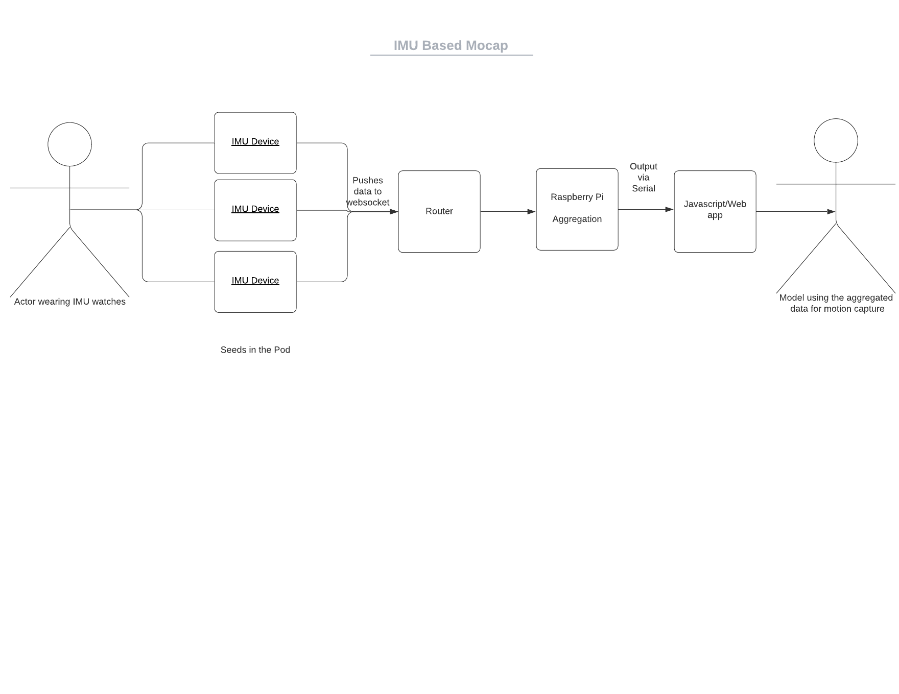
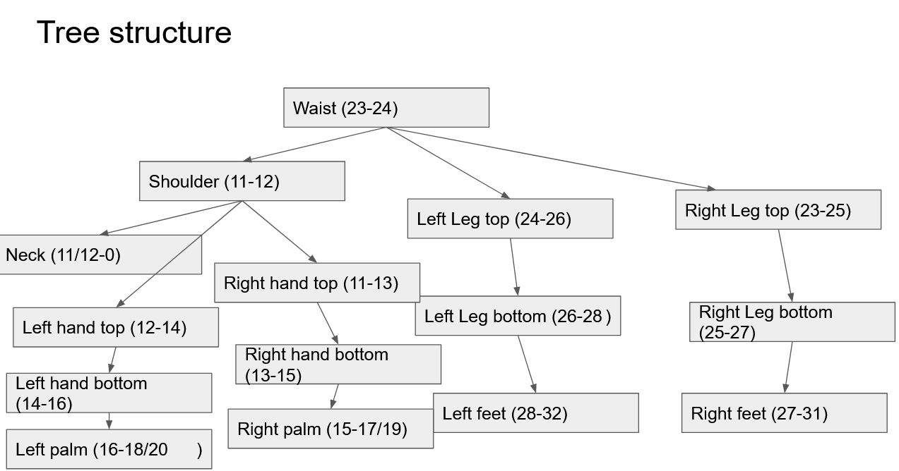

Seed is interchangeable with TTGO T-Watch.
Mesquite Motion Capture
An open source alternative to motion capture
Overview
The overall scope of Mesquite Mocap is to make an open-source, low-cost motion capture process using IMU devices and javascript. A traditional mocap set up can cost upwards of $100k. Each IMU device starts at $35 dollars. By creating a system of many TTGO T-Watches, we can rig 3D models using motion data. This project is open-source and available for community developers and artists. Anyone can access the code, add to the code, or change it to their needs. All Mesquite Mocap code is under the GNU General Public License.
Application and Terminology
There are multiple applications for this system: understanding movement, extending movement, and mapping movement to name a few. The uses of this system range depending on user specified projects. The code base is meant to be flexible enough to incorporate into a wide variety of applications.
Each Mesquite Mocap system consists of many seeds (the IMU watches) that form a pod (aggregate of watches). When there are systems with multiple mocap suits, then this becomes a tree. Going forward:
A pod is interchangeable with an individual's full mocap suit
A tree interchangeable with a system of multiple mocap suits
Technical Overview
This is the high level overview of the technical implementation of this project.
Architecture Diagram
{kind=link}
The breakdown of this system is as follows
- Seeds (or sensors) are coded in Arduino to: connect to Wifi, connect to a websocket and pass data
- This is data is passed to a router that acts as the server to capture this data
- Router passes this data to the Raspberry Pi
- A raspberry pi acts as a web socket and reads all the information from the watches and will send information through the serial port for aggregation
- This data is outputted to the computer via serial, and then using javascript, watches are then assigned to their respective limbs (see sample below)
- The model outputs movement
{kind=link}
Pod structure
{kind=link}
Hardware Specifications
To get started on this project, you need to have the following hardware.
LilyGo TTGO Watch 2019

You can purchase this watch from AliExpress or Amazon.
bno08x Chip
Soldered onto the watch hardware, you will need the bno08x chip added to the watch.

You can purchase this from Ali Express or Amazon.
Raspberry Pi zero
You will need a Raspberry Pi to aggregate the data and push it to the machine running the modeling script.
You can purchase this from the Raspberry Pi website. There are a few links to various purchasing options; you can pick the option that is right for you.
Router
You will need some basic router to allow the Seeds to push data to the Raspberri Pi for aggregation. Most will work. You can find the soldering guide in our quickstart page.
You can find the soldering guide on the Quick Start page.
Software Specifications
To use this method, you need access to:
- Ardunio IDE (libraries are covered in the guide)
- Any editor, we reccommend Atom
- NodeJs (downloading instructions are in the guide)
If you're looking for specific ReadMe.m, we have them updated in the Git Repo. The repos you're going to use are:
- pod-mcu-code: This is the Arduino code for the watch
- pi-ws-server-to-serial: This is the raspberry pi code
- web-client-serial: This is the router running the web server.